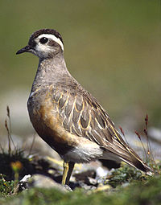
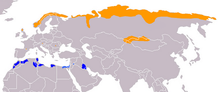

| Eurasian Dotterel | |
|---|---|
|  | |
| Binomial name | |
| Charadrius morinellus Linnaeus, 1758 |
|
|  | |
Summer Winter |
The Eurasian Dotterel (Charadrius morinellus), or in Europe just Dotterel, is a small wader in the plover family of birds. It breeds in the Arctic tundra of northern Eurasia, from Norway to eastern Siberia, and on suitable mountain plateaus such as the Scottish highlands and the Alps. It nests in a bare ground scrape and lays two to four eggs.
This species is migratory, wintering in a narrow belt across north Africa from Morocco eastwards to Iran. Migration stopovers are traditional, and small parties (trips) of Dotterels pass through each year at these usually inland arable or grassy sites. The winter habitat is semi-desert.
This plover is smaller and more compact than Eurasian Golden Plover. It has a striking whitish supercilium in all plumages and has plain wings in flight. Adults in summer are unmistakable, with a chestnut breast bordered above with white, black belly and warm brown back. The legs are yellow, and the short bill is black. As with the phalaropes, the female is brighter than the male. The male dotterel generally is responsible for incubation and looks after the chicks. In most cases the cock dotterel successfully prevents other males from getting his mate and fertilizing her eggs. He usually rears chicks that he has fathered.
Only 4.6% (2/44) of chicks were not the genetic offspring of the caring male corresponding to 9.1% (2/22) broods affected.
Winter birds lack the rich underpart coloration, apart from the white breast line, and are greyer above. Young birds are similar but have a scaly appearance to their backs.
The Dotterel's food is insects and other small invertebrates such as snails and worms and shellfish. These are obtained by a run-and-pause technique, rather than the steady probing of some other wader groups.
The flight call is a soft pyurr. The female's song is a simple repetitive whistle.
The Eurasian Dotterel is one of the species to which the Agreement on the Conservation of African-Eurasian Migratory Waterbirds (AEWA) applies.
{kind=link}
{kind=link}